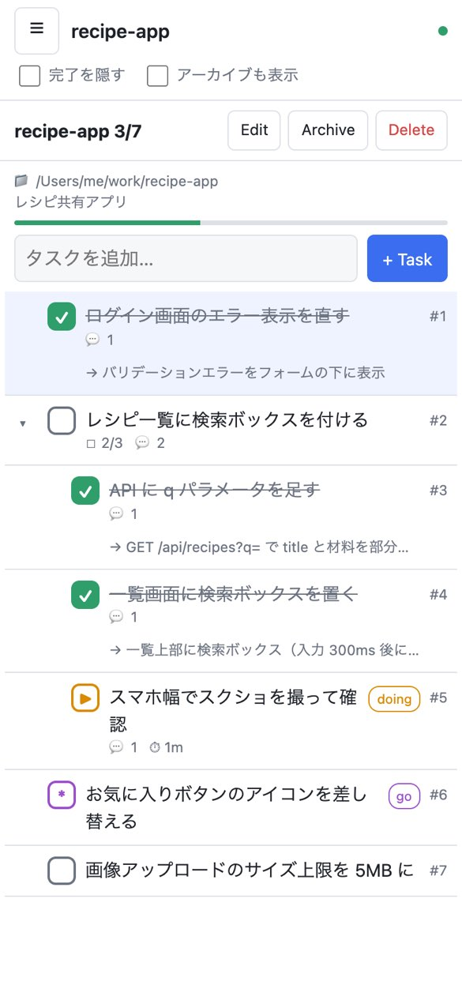
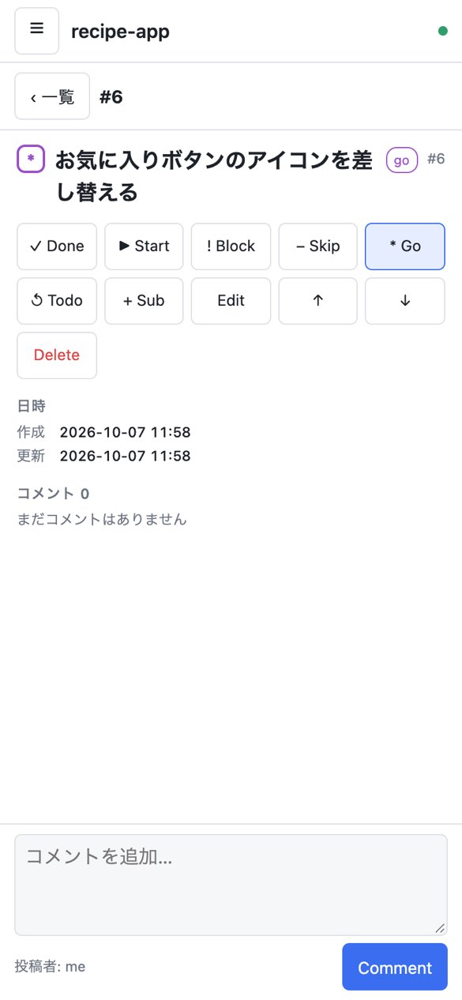
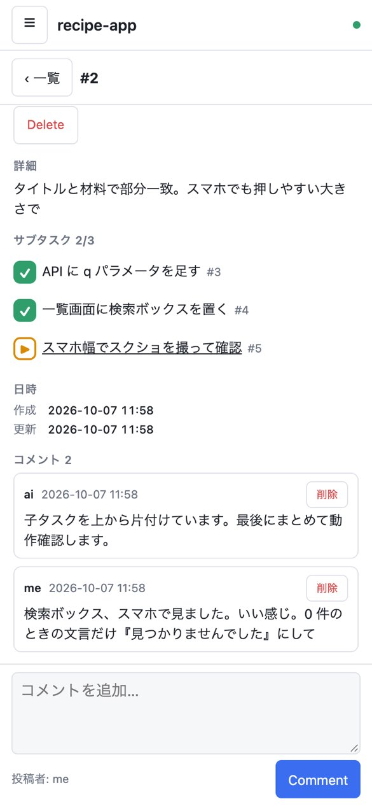
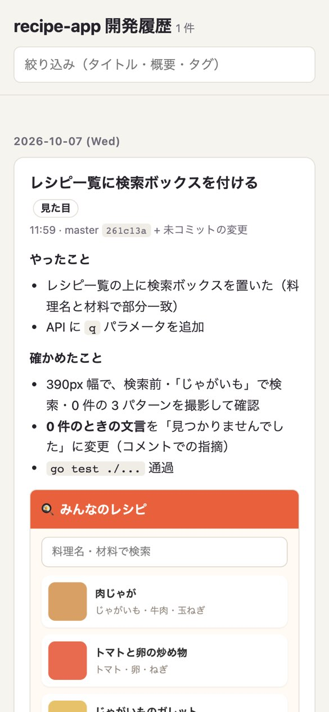
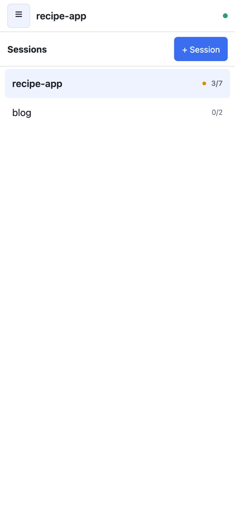

iPhone から開発する
Claude Code・Tailscale・aitodo・開発履歴（devlog）の組み合わせで、Mac に置いたプロジェクトを外出先の iPhone から進める使い方です。
Mac の前に座っていないあいだも、手が空いたときにちょっとした修正を頼んで、できあがりを見て、次を頼む、くらいのことはしたいと思っていました。ただ、iPhone でターミナルを開いてコードを読むのはつらいです。そこで、iPhone ではコードを見ずに済むように役割を分けました。
- 頼む・眺める：aitodo の Web UI にタスクを書いて
goにする。進み具合とコメントもここで見る - 作業する：Mac で起動しっぱなしの Claude Code が、
goを受け取って作業する - 確かめる：Claude が撮った動作確認のスクショを、devlog のページで見る
- 口をはさむ：込み入ったときだけ、Claude アプリの Remote Control で会話に入る
- つなぐ：iPhone と Mac は Tailscale でつなぐので、インターネットには何も公開しない
Claude アプリ：Remote Control
Tailscale アプリ
（tailnet 内だけ）
aitodo web / aitodo mcp
devlog/index.html
流れ
- 1iPhone の aitodo にタスクを書き、
goにするiPhone - 2Mac の Claude Code にタスクが届き、作業が始まるMac
- 3Claude が途中経過をコメントに残す。iPhone で眺めて、気になればコメントを返す両方
- 4Claude が動作確認のスクショを撮り、devlog に記録してからタスクを完了にするMac
- 5iPhone で devlog を開いて、スクショで仕上がりを確かめるiPhone
ここからのスクショは、デモ用のデータを Mac のブラウザで iPhone の幅（390px）にして撮ったものです。

1. タスクを書いて go にする
Safari で aitodo の Web UI を開きます。上の入力欄にタスクを書いて追加し、詳細画面で Go を押すと go になります。紫の go の印がついたタスクが、Claude への「今すぐやって」の合図です。
ホーム画面に追加しておくと、アプリのように開けます。

2. Claude が受け取る
Mac で起動している Claude Code が、Claude Code の channels の仕組みで go のタスクを受け取ります。task_claim で doing に変えてから作業に入るので、同じフォルダで Claude を何個か動かしていても、着手するのは 1 つだけです。
Claude がほかの作業をしている最中なら、一区切りついてから取りかかります。

3. 途中経過を見て、コメントで返す
Claude は、サブタスクを片付けるたびに結果をコメントに残します。画面は 1.5 秒ごとに更新されるので、開いておけば進んでいくのが見えます。
「0 件のときの文言だけ変えて」くらいの注文は、ここにコメントで書けば済みます。もっと込み入った話になったら、Claude アプリから Remote Control で、その Claude Code の会話に直接入ります。

4・5. スクショで確かめる
devlog は、Claude が動作確認で撮ったスクショや動画を、作業の概要と一緒にプロジェクトの devlog/ に残して、1 枚の HTML にまとめる Claude Code のスキルです。「完了を報告する前に devlog に記録する」と CLAUDE.md に書いておくと、毎回記録してくれます。
iPhone ではコードの差分を読まず、このページで見た目を確かめて、よければタスクを閉じ、だめならコメントを書いて go に戻します。

プロジェクトをまたいで
aitodo のセッションは作業フォルダごとに分かれています。プロジェクトごとに Claude Code を起動しておけば、iPhone からはセッションを切り替えて、それぞれに go を出せます。オレンジの点は、いま作業中のタスクがあるという印です。
準備（Mac）
aitodo を入れて、Claude Code に MCP として登録する
go install github.com/kminiatures/aitodo@latest
cd ~/work/recipe-app
aitodo session add recipe-app --dir .
claude mcp add aitodo -- aitodo mcp任せきりにするなら、aitodo のツールを許可しておきます（.claude/settings.json の permissions.allow に "mcp__aitodo" を追加）。許可しないと、Claude は最初の task_claim の確認で止まります。
Claude Code を channels と Remote Control つきで起動する
cd ~/work/recipe-app
claude --dangerously-load-development-channels server:aitodo \
--permission-mode bypassPermissions --remote-control起動時に開発用チャンネルの確認が出たら「I am using this for local development」を選びます。bypassPermissions では、Claude がファイル編集やコマンドを確認なしで実行します。気になる場合は外して、確認は Remote Control から返してください。
Web UI と devlog を Tailscale の IP だけで開く
Mac と iPhone の両方に Tailscale を入れて、同じ tailnet にログインしておきます。そのうえで、Mac の Tailscale の IP でだけ待ち受けます。
# aitodo の Web UI
aitodo web --addr "$(tailscale ip -4):7878"
# devlog（プロジェクトの devlog/ をそのまま配る）
python3 -m http.server --bind "$(tailscale ip -4)" 8000 -d ~/work/recipe-app/devlogiPhone の Safari では、MagicDNS のホスト名で開けます（my-mac は Mac のマシン名に置き換えてください）。
http://my-mac:7878/ aitodo
http://my-mac:8000/ devlogCLAUDE.md に書いておくこと
- 動作確認のためにスクショを撮ったら、自分で見て確かめたあと、
完了を報告する前に devlog スキルで devlog/ に記録する気をつけること
- aitodo の Web UI には認証がありません。
goにしたタスクはそのまま Claude への指示になるので、待ち受けるのは Tailscale の IP だけにして、0.0.0.0やtailscale funnelでインターネットに出さないでください - Claude Code の channels は research preview の機能です。Team / Enterprise プランでは、管理者が channels を有効にしている必要があります
- Mac がスリープすると止まります。出かける前に、電源につないでスリープしない設定にしておきます